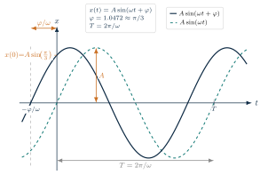
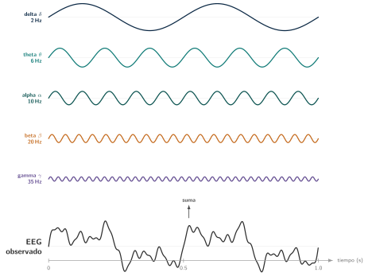
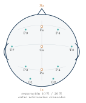
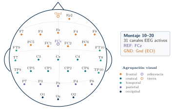
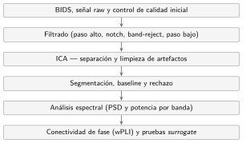

3 Fundamentos de EEG para ingenieros
| Sección | Lectura | Estudio |
|---|---|---|
| ¿Qué mide realmente un EEG? | 1 min | 5 min |
| Origen fisiológico de la señal EEG | 2 min | 10 min |
| Oscilaciones y bandas de frecuencia | 4 min | 5 min |
| Cadena de adquisición y digitalización | 3 min | 5 min |
| Sistema internacional 10–20 | 2 min | 5 min |
| Referencia, tierra y montajes EEG | 4 min | 15 min |
| Montaje del proyecto NeuroMIND | 3 min | 5 min |
| Artefactos habituales en EEG | 2 min | 5 min |
| Fortalezas y limitaciones de la técnica | 2 min | 5 min |
| Del fundamento teórico al pipeline | 1 min | 5 min |
| Anexo del capítulo: mapa global del código | 3 min | 5 min |
| Síntesis y preguntas para discutir | 3 min | 10 min |
| Dudas del proyecto | 6 min | 10 min |
| Capítulo completo | 31 min | 50 min |
Objetivos de aprendizaje
Objetivo del capítulo. Qué mide un electrodo, cómo se forma cada canal frente a la referencia y qué puede y qué no puede decir el EEG sobre el cerebro.
La pregunta científica. Antes de calcular nada sobre la señal de un paciente con EM, ¿qué es exactamente lo que llega al pipeline: qué fuente la genera, qué le hace el camino hasta el electrodo y con qué referencia queda expresada?
Al terminar este capítulo deberías ser capaz de:
- explicar por qué el EEG refleja la suma de corrientes postsinápticas de poblaciones sincronizadas y no potenciales de acción individuales;
- describir la cadena que va del campo cortical a la matriz canales×muestras y qué conviene vigilar en cada etapa;
- leer el nombre de un electrodo del sistema 10–20 (letra, número o «z») y situarlo en el cuero cabelludo;
- distinguir tierra de referencia, escribir un canal como diferencia de potencial y explicar qué cambia, y qué no, al re-referenciar;
- enumerar el montaje de NeuroMIND (31 electrodos activos, referencia FCz, tierra Gnd, sin Fp1) y por qué el pipeline no re-referencia;
- nombrar los artefactos más frecuentes y los límites de la técnica.
Conocimientos previos. El capítulo 1 y la idea de frecuencia y fase de una oscilación. No hace falta saber de neurofisiología: lo necesario se explica en las notas laterales. Es el capítulo de fundamentos del informe: un puente de señal de la neurona al archivo digital y de ahí al montaje con el que se registró la cohorte.
Lecturas esenciales
Tres lecturas, de mayor a menor prioridad. La dificultad para ingeniería (de uno a tres, de menor a mayor) y los tiempos son los que da el informe original y son orientativos.
Pasa el cursor (o toca) sobre la cita para ver la referencia completa. Los tres niveles son los del informe: imprescindible, para profundizar y consulta.
Imprescindible
Cohen (2014) · Analyzing neural time series data: theory and practice (libro, MIT Press).
El mejor puente para un ingeniero: qué es la señal electrofisiológica y cómo se analiza, con código.
Leer: parte I, capítulos 1–2 (propósito del libro, ventajas y límites del EEG).
- Tiempo ≈ 2 h
- Dificultad 1
- Sección Sección 3.1
- DOI sin DOI (libro; ISBN 9780262019873)
Para profundizar
Iriarte Franco y Artieda González-Granda (2013) · Manual de neurofisiología clínica (libro, Editorial Médica Panamericana).
Manual de neurofisiología clínica en castellano: origen de la señal, montajes y lectura clínica del EEG.
Leer: capítulos de fundamentos del EEG.
- Tiempo ≈ 3 h
- Dificultad 2
- Sección Sección 3.2
- DOI sin DOI (libro; ISBN 9788491104810)
Consulta
Yamada y Meng (2018) · Practical guide for clinical neurophysiologic testing: EEG (libro, Wolters Kluwer).
Guía práctica del registro clínico: sistema 10–20, montajes, ritmos normales y artefactos.
- Tiempo a demanda
- Dificultad 1
- Sección Sección 3.5
- DOI sin DOI (libro; ISBN 9781496383020)
3.1 ¿Qué mide realmente un EEG?
El electroencefalograma (EEG) es una técnica no invasiva que registra la actividad eléctrica del cerebro mediante electrodos colocados sobre el cuero cabelludo. La señal registrada corresponde a fluctuaciones de voltaje generadas por la actividad eléctrica síncrona de poblaciones neuronales, principalmente de la corteza cerebral.
Sinapsis: unión funcional entre dos neuronas, o entre una neurona y otra célula, que permite la transmisión de información mediante neurotransmisores o señales eléctricas.
La principal fortaleza del EEG es su excelente resolución temporal, que permite estudiar procesos neuronales dinámicos en el tiempo. A ello se suman la buena cobertura espacial, el carácter portátil y relativamente económico del registro, y la sensibilidad a distintas condiciones o estados mentales.
3.2 Origen fisiológico de la señal EEG
El registro EEG parte de la actividad neuronal. Las corrientes postsinápticas en neuronas piramidales se propagan a través del volumen conductor formado por encéfalo, cráneo, cuero cabelludo y piel. Los electrodos situados sobre el cuero cabelludo detectan diferencias de potencial, que posteriormente se amplifican, se filtran y se convierten a formato digital.
Referencia histórica: El primer electroencefalograma humano fue registrado en 1924 por Hans Berger, quien documentó por primera vez las oscilaciones eléctricas espontáneas del cerebro sobre el cuero cabelludo (Iriarte Franco y Artieda González-Granda 2013). Desde entonces, el EEG se ha consolidado como herramienta de diagnóstico, pronóstico y orientación terapéutica en neurofisiología clínica.
![Dos paneles. A la izquierda, una neurona piramidal vertical con sus partes rotuladas: dendritas en la parte superior, una sinapsis en la dendrita apical a la que llega el axón de otra neurona, el soma triangular con su núcleo, el axón hacia abajo con segmentos de vaina de mielina separados por nodos de Ranvier y las terminales sinápticas al final. Una flecha naranja indica la corriente postsináptica, que entra en la sinapsis, marcada con un signo menos, y sale junto al soma, marcada con un signo más, y vuelve por el exterior. A la derecha, dos trazos frente al tiempo: el potencial de acción del axón, un pico rápido y breve, y el potencial postsináptico de dendritas y soma, una onda más lenta y pequeña; tres de ellas desplazadas en el tiempo se suman en una onda mayor. Un texto final explica que el EEG recoge sobre todo esa suma de potenciales postsinápticos de muchas neuronas.](../assets/figures/cap03/neurona_eeg.svg)
Una neurona produce dos tipos de señal eléctrica. El potencial de acción (60–80 mV) es el disparo que viaja por el axón; el potencial postsináptico es la respuesta, más lenta y pequeña, de las dendritas y el soma a ese disparo. El EEG no ve disparos sueltos: ve la suma de corrientes postsinápticas de del orden de 10^8 neuronas piramidales que actúan a la vez. Por eso mide actividad sincronizada de grandes poblaciones, no neuronas individuales.
A nivel celular, la secuencia generativa es la siguiente: la despolarización postsináptica libera iones Na^+ hacia el interior de la célula, lo que crea una negatividad extracelular local. Cuando un número suficiente de neuronas piramidales actúa de forma sincronizada —estimado en del orden de 10^8 células— el potencial de campo resultante es detectable desde el cuero cabelludo. Una oscilación con amplitud suficiente para producir una punta visible en el EEG requiere una superficie cortical activa de aproximadamente 6\,\text{cm}^2 (Iriarte Franco y Artieda González-Granda 2013). Por tanto, el EEG refleja potenciales de acción (\approx 60–80\,\text{mV}) solo de forma indirecta; lo que registra directamente son los potenciales postsinápticos sumados.
Potencial de acción: en reposo V_m \approx -70\,\mathrm{mV}. Durante la despolarización, el potencial de Nernst del sodio E_{\mathrm{Na}} = \frac{RT}{F}\ln\frac{[\mathrm{Na}^+]_{\mathrm{out}}}{[\mathrm{Na}^+]_{\mathrm{in}}} \approx +60\,\mathrm{mV} fija el orden de magnitud del empuje iónico. El salto transmembrana del pulso unitario se sitúa, por tanto, en torno a 60–80\,\mathrm{mV} (Iriarte Franco y Artieda González-Granda 2013), muy por encima de la escala de µV registrada en EEG.
El EEG no es estable ni estacionario en sentido estricto: el contenido frecuencial varía a lo largo de la sesión. Esta es la razón por la que el análisis espectral se aplica sobre épocas cortas y cuasiestacionarias.
En EEG no se interpreta un electrodo aislado como una fuente directa. La señal observada depende de la actividad neuronal, del volumen conductor, del montaje de electrodos, de la referencia y del procesamiento aplicado.
3.3 Oscilaciones y bandas de frecuencia
Con el origen de la señal ya fijado, esta sección describe cómo se organiza en el tiempo: primero qué es una oscilación y de qué tipos las hay; después, cómo se agrupan en bandas de frecuencia con significado funcional; y por último, cómo cambia el ritmo dominante entre ojos cerrados y abiertos, que es la condición experimental del estudio.
3.3.1 Tipos de oscilación y modelo sinusoidal
Las oscilaciones del EEG emergen del interjuego de muchos ensamblados neuronales a través de sinapsis excitadoras e inhibidoras (Sanei y Chambers 2022; Cohen 2014). Desde el punto de vista del análisis espectral conviene distinguir tres tipos de oscilaciones según su relación con los eventos externos:
- Espontáneas: presentes de forma continua sin que dependa de un estímulo externo, como el ritmo alfa en reposo con ojos cerrados.
- Evocadas: ligadas con precisión temporal a un estímulo; son capturadas típicamente mediante potenciales evocados y promediado.
- Inducidas: desencadenadas por un evento pero sin un anclaje temporal fijo, como la sincronización gamma ante atención sostenida.

Oscilación: variación periódica en el tiempo. Una onda sinusoidal se escribe x(t)=A\sin(\omega t+\phi): A es la amplitud, \omega=2\pi f la frecuencia angular (periodo T=2\pi/\omega) y \phi la fase inicial.
Las oscilaciones pueden ser además rítmicas (repetitivas en el tiempo, identificables como picos en la PSD) o transitorias (cortas ráfagas cuya energía se distribuye en un intervalo temporal acotado, y que requieren análisis tiempo-frecuencia para ser caracterizadas). En registros de reposo se asume predominio de actividad rítmica y cuasi-estacionaria, lo que justifica el uso de FFT como herramienta principal.
EEG – EC: el EEG de reposo con ojos cerrados suele mostrar una firma alfa (8–12 Hz) prominente sobre regiones occipitales y parietales. Este ritmo se suprime parcialmente al abrir los ojos (alpha desynchronization).
3.3.2 Bandas de frecuencia y significado funcional
El EEG suele resumirse en bandas de frecuencia. Se presentan las bandas delta (\delta), theta (\theta), alpha (\alpha), beta (\beta) y gamma (\gamma), junto con subdivisiones habituales (sub-delta, low-gamma y high-gamma), con los rangos y asociaciones resumidos en la tabla 3.1. Estas asociaciones deben interpretarse siempre dentro del contexto clínico o experimental.
Las bandas EEG son convenciones operativas, no compartimentos fisiológicos rígidos. Sus límites varían ligeramente entre estudios y laboratorios. Algunos autores subdividen gamma en low-gamma (30–80 Hz) y high-gamma ($>$80 Hz), e incluyen sub-delta (0–1 Hz). Este informe adopta la convención de la tabla 3.1 como definición operativa del pipeline.
| Banda | Rango (Hz) | Características | Estados o funciones asociadas |
|---|---|---|---|
| Sub-delta | 0–1 | Actividad muy lenta, en el límite infrabajo del EEG | Oscilaciones lentas y deriva; sensible a duración de época y filtrado. |
| Delta (\delta) | 0.5–4 | Alta amplitud, baja frecuencia | Sueño profundo, recuperación. |
| Theta (\theta) | 4–8 | Ritmos medios | Relajación, memoria, procesos internos. |
| Alpha (\alpha) | 8–12 | Ritmo posterior dominante | Relajación, ojos cerrados, inhibición cortical. |
| Beta (\beta) | 12–30 | Baja amplitud, rápida | Atención, concentración, actividad cortical. |
| Low-gamma (\gamma) | 30–80 | Ritmo rápido, amplitud moderada | Procesamiento sensorial, atención, sincronización cognitiva. |
| High-gamma (\gamma) | $>$80 | Muy rápida, baja amplitud; sensible a EMG | Funciones cognitivas altas, actividad local; interpretación cautelosa. |
El texto presenta la tabla 3.1 como «definición operativa del pipeline», pero los límites que usa el código son otros. En la sección [bands] de config/pipeline.toml figuran siete bandas: delta 0,5–4 Hz, theta 4–8, alfa 7,8–11,7, beta baja 12–15, beta media 15–18, beta alta 18–30 y gamma 30–50. Con esos límites theta y alfa se solapan entre 7,8 y 8,0 Hz y entre alfa y beta baja queda un hueco de 11,7 a 12,0 Hz (lo advierte el propio archivo). La tabla no coincide en alfa (8–12 Hz) ni en la división de beta, y las bandas sub-delta, low-gamma y high-gamma no existen en la configuración. Se conserva el texto del informe; para lo que se calcula rige el archivo de configuración. confirmado frente al repositorio de NeuroMIND (commit 765f725).

3.3.3 Reactividad en reposo: ojos cerrados y abiertos
En condiciones de reposo, se propone revisar por separado ojos cerrados (EC) y ojos abiertos (EO). En ojos cerrados se espera predominio del ritmo alfa posterior, especialmente en regiones occipitales, con máxima amplitud en electrodos como O1, O2 y Oz. En ojos abiertos, el alfa suele bloquearse o disminuir, y puede observarse mayor actividad de baja amplitud y frecuencia más alta.
La revisión de resting state debe considerar:
| Aspecto | Qué revisar |
|---|---|
| Distribución topográfica | Predominio posterior en alfa durante ojos cerrados y comparación entre hemisferios. |
| Reactividad | Disminución rápida del alfa al abrir los ojos y reaparición al cerrarlos. |
| Otros ritmos fisiológicos | Theta, beta y delta, interpretados en contexto. |
| Asimetrías o anomalías | Asimetría marcada, ausencia persistente de alfa posterior o actividad focal; deben reportarse para revisión. |
3.4 Cadena de adquisición y digitalización
De forma operativa, la cadena de registro puede leerse como una transformación progresiva desde una fuente biológica distribuida hasta una matriz digital analizable. A continuación se recorre cada etapa: qué ocurre, qué señal queda disponible y qué conviene vigilar antes del preprocesado.
Electrolito: medio que contiene iones móviles y conduce corriente eléctrica. En EEG, el gel aplicado entre electrodo y piel actúa como electrolito y mejora el contacto iónico con el cuero cabelludo.
Impedancia: oposición de un circuito al paso de corriente alterna, medida en ohmios (\Omega). Una impedancia electrodo–piel elevada aumenta el ruido y la sensibilidad a artefactos de movimiento.
Multiplexar: intercalar varias señales en una única secuencia temporal. En EEG, los valores de todos los canales de un mismo instante se encadenan antes de transmitir o almacenar la trama digital.

Actividad neuronal. En el origen, corrientes postsinápticas sincronizadas en poblaciones de neuronas piramidales generan campos eléctricos corticales débiles, distribuidos y variables en el tiempo. El EEG no observa esa fuente de forma directa: el registro refleja actividad agregada de muchas células a la vez.
Volumen conductor. Al abandonar la corteza, las corrientes atraviesan encéfalo, líquido cefalorraquídeo, cráneo, cuero cabelludo y piel. Al llegar al cuero cabelludo, los potenciales aparecen atenuados y espacialmente suavizados. La conducción de volumen reduce la resolución espacial y mezcla contribuciones de fuentes distintas; este efecto condiciona la interpretación topográfica posterior.
![Dos paneles. A la izquierda, un corte por capas de abajo arriba: corteza, líquido cefalorraquídeo, cráneo y cuero cabelludo, con cuatro electrodos con gel encima. En la corteza, un grupo de neuronas piramidales resaltado en naranja actúa a la vez como fuente, con una flecha hacia arriba; a su alrededor, líneas de potencial en forma de arco se abren y se debilitan al subir por las capas. A la derecha, dos perfiles del potencial frente a la posición: sobre la corteza, un pico alto y estrecho; en el cuero cabelludo, una curva más baja y más ancha. Una flecha entre ambos indica atenuación y suavizado espacial.](../assets/figures/cap03/volumen_conductor_capas.svg)
Electrodos. El montaje mide diferencias de potencial entre cada canal y su referencia. El gel conductor actúa como electrolito y reduce la impedancia electrodo–piel: el rango objetivo es 300–5\,000\,\Omega, y por encima de 5\,\text{k}\Omega la señal degrada y aumenta la sensibilidad a artefactos de movimiento. La salida en esta fase son señales analógicas por canal, dependientes del contacto, de la referencia y de la posición del electrodo. Conviene controlar impedancias fuera de rango, mal contacto y desplazamientos del montaje.
Amplificación y digitalización. Un amplificador diferencial eleva la señal (amplitud útil del orden de 50\,\mu\text{V}) y un conversor A/D la muestrea. Para capturar el rango EEG habitual hasta $$70 Hz se requiere F_s\ge 256\,\text{Hz}; se recomienda F_s=512\,\text{Hz} para un registro fiable (Yamada y Meng 2018). Los valores de todos los canales en cada instante se multiplexan y se transmiten como una única trama digital, de modo que el resultado es una matriz canales\timesmuestras lista para BIDS y preprocesado. En esta etapa hay que vigilar ruido de línea, saturación, filtros de hardware o software no documentados y una frecuencia de muestreo mal especificada.
Buenas prácticas del registro. En la adquisición deben cuidarse tanto el montaje como las condiciones del registro: preparación de la piel y los electrodos, ambiente tranquilo y con iluminación tenue, comprobación de impedancias, posicionamiento cómodo del paciente, revisión de la señal durante el registro y documentación de medicación, hora, estado de alerta, eventos y condiciones del estudio. Como criterio de calidad, se recomienda una impedancia baja inferior a 5\,\mathrm{k}\Omega.
3.5 Sistema internacional 10–20
Los registros del estudio emplean el sistema internacional 10–20, definido por la Federación Internacional de Sociedades de Electroencefalografía (FISE), que divide el cuero cabelludo en posiciones mediante porcentajes fijos de distancias craneales. Esta convención garantiza reproducibilidad entre laboratorios y sujetos (Yamada y Meng 2018; Iriarte Franco y Artieda González-Granda 2013).

El sistema 10–20 usa como referencias anatómicas el nasion (Nz, frente), el inion (Iz, nuca), los puntos preauriculares y el vertex (Cz). Las separaciones entre electrodos adyacentes equivalen al 10 % o 20 % de la distancia total entre esos puntos. La denominación de cada electrodo sigue dos criterios:
- Letra del canal — indica la región cortical (tabla 3.3; figura 3.6).
- Número o z — indica la posición lateral: números impares para el hemisferio izquierdo, números pares para el derecho, y la letra z para la línea media central. El número aumenta con la distancia a la línea media.
Región cortical. En sentido amplio, un sector de la corteza de un órgano: su capa externa, distinta de la porción interna. El nombre procede del latín cortex, «cáscara», y designa esa capa en el riñón, la glándula suprarrenal o el hueso.
En el cerebro, la corteza cerebral es la lámina de sustancia gris que recubre los hemisferios. Una región cortical es un sector de esa lámina, nombrado por su posición: frontal, parietal, temporal u occipital. La letra del canal indica qué sector queda bajo el electrodo.
z la línea media. T7/T8 y P7/P8 son los nombres actuales de T3/T4 y T5/T6. No hay Fp1. Véase el esquema en la figura 3.6 y la vista del montaje en la figura 3.8.
| Canal | Región | Electrodos | Nombre |
|---|---|---|---|
| Fp | Frontopolar | Fp2 | EEG |
| F | Frontal | Fz | EEG |
| F | Frontal lateral | F3, F4 | EEG |
| F | Frontal inferior | F7, F8 | EEG |
| FT | Frontotemporal | FT9, FT10 | EEG |
| FC | Frontocentral | FC5, FC1, FC2, FC6 | EEG |
| C | Central | C3, Cz, C4 | EEG |
| T | Temporal | T7, T8 | EEG |
| TP | Temporoparietal | TP9, TP10 | EEG |
| CP | Centroparietal | CP5, CP1, CP2, CP6 | EEG |
| P | Parietal | P3, Pz, P4 | EEG |
| P | Parietal inferior | P7, P8 | EEG |
| O | Occipital | O1, Oz, O2 | EEG |
| FC | Frontocentral | FCz | Referencia |
| Gnd | Frontal (ECI) | Gnd | Tierra |
3.6 Referencia, tierra y montajes EEG
La señal EEG siempre se mide como una diferencia de potencial (\Delta V). Un canal no representa el voltaje absoluto de un electrodo, sino la diferencia entre el potencial registrado en una posición del cuero cabelludo y el potencial de una referencia. En términos operativos, el amplificador diferencial aumenta esa diferencia y la convierte en una señal analizable.
La referencia fija el «cero» eléctrico del registro. Cambiarla no crea una fuente nueva, pero sí modifica la forma y amplitud con que se expresan los canales.
Por ello, la elección del montaje influye en la interpretación de la señal. Por este motivo, la tierra (ground) y la referencia (reference) no cumplen el mismo papel y deben documentarse por separado:
- Tierra (GND): conectado al circuito de tierra del amplificador para estabilizar el sistema y reducir ruido común; no define el valor de los canales EEG. En este estudio es el electrodo Gnd propio del gorro ECI, en la línea media frontal; no ocupa ninguna posición 10–20.
- Referencia (REF): electrodo o promedio respecto al cual se mide la diferencia de potencial. Afecta a amplitud y distribución aparente de señales. La referencia online es FCz.
- Electrodos EEG: cada canal se define como V_{\mathrm{canal}}(t) = V_{\mathrm{activo}}(t) - V_{\mathrm{ref}}(t).
Se distinguen tres esquemas habituales según cómo se elige la referencia:
- Monopolar (referenciado): todos los canales comparten una referencia única (mastoides, promedio, etc.). Ejemplo: canal 1 = Fp1-A1, canal 2 = Fp2-A2. Produce buenos mapas de voltaje, pero un electrodo de referencia único puede atenuar señales de los electrodos cercanos.
- Bipolar: cada canal es la diferencia entre dos electrodos adyacentes, organizados de izquierda a derecha y de anterior a posterior. Muy sensible a anomalías focales; mal para cartografía global.
- Referencia promedio: la referencia es la media de todos los electrodos activos. Por convención se suelen excluir Fp1 y Fp2 de la media por su alta contaminación ocular (Yamada y Meng 2018).
![A la izquierda, una cabeza vista desde arriba con electrodos. Un electrodo activo (azul) y la referencia (ámbar, FCz) se conectan con flechas a un recuadro central, «Amplificador diferencial», que calcula cada canal como V activo menos V ref; una línea punteada marca la diferencia ΔV entre ambos. El electrodo Gnd frontal (verde) se conecta al amplificador con la leyenda «GND estabiliza el circuito pero no define el canal». Una flecha baja del amplificador a «Canales digitales EEG_i(t)». Una leyenda distingue activo (canal EEG), REF (FCz) y GND (Gnd frontal).](../assets/figures/cap03/eeg_ground_reference.svg)
La referencia ideal debería recoger la menor cantidad posible de señal neural de interés, compartir en lo posible el ruido común de los canales del cuero cabelludo y evitar sesgos hemisféricos. En la práctica, se usan distintos esquemas según el sistema de adquisición y el análisis posterior: referencias online como FCz, referencias en mastoides o lóbulos de las orejas, y referencias promedio calculadas a partir de todos los electrodos válidos.
En otros sistemas se usan referencias comunes como CMS/DRL. En el dataset de este informe, la referencia y la tierra se codifican en electrodes.tsv como canales REF y GND y quedan excluidas de la matriz de canales EEG activos.
Una referencia lateralizada puede introducir asimetrías aparentes. Por eso, cuando el estudio compara hemisferios, conviene documentar con detalle la referencia online y cualquier re-referenciación posterior.
La re-referenciación permite recalcular offline los canales respecto a un nuevo punto de referencia. Si V_i(t) es el potencial registrado en el electrodo i y V_{\mathrm{ref}}(t) el potencial de la referencia, el canal almacenado puede escribirse conceptualmente como:
EEG_i(t) = V_i(t) - V_{\mathrm{ref}}(t).
Al cambiar la referencia, las formas de onda pueden variar porque los valores se expresan respecto a un nuevo nivel de cero voltaje. Sin embargo, la topografía —distribución espacial de la actividad en el cuero cabelludo, representada como mapa interpolado entre electrodos— mantiene las diferencias relativas entre canales; lo que cambia es la referencia común frente a la que esas diferencias se representan.
Ejemplo 3.1 (Cambiar la referencia no cambia las diferencias entre canales) Con valores inventados, solo para ver la aritmética (no es un registro): sean tres electrodos con potenciales V_{O1}=14\,\mu\text{V}, V_{Cz}=9\,\mu\text{V} y V_{FCz}=4\,\mu\text{V} medidos respecto a un mismo punto arbitrario. Con referencia FCz los canales son O1=14-4=10, Cz=9-4=5 y FCz=0\,\mu\text{V}. Si se re-referencia a Cz restando a cada canal el valor de Cz (5 µV), quedan O1=5, Cz=0 y FCz=-5\,\mu\text{V}. Los valores cambian, pero la diferencia entre O1 y Cz es de 5 µV en los dos casos: se conservan las diferencias entre canales, y lo que cambia es el «cero» común.
3.7 Montaje del proyecto NeuroMIND
Una vez fijados el sistema 10–20 y el papel de la referencia, esta sección concreta qué montaje se registró en la cohorte y con qué referencia llega la señal al pipeline.
3.7.1 Posiciones y canales activos
En la configuración del proyecto NeuroMIND, la tabla 3.3 es el montaje con el que se registró la cohorte.
BrainVision: formato de exportación del ecosistema Brain Products (Recorder para adquisición, Analyzer para revisión y exportación). Cada registro se guarda como tríptico .vhdr (cabecera), .vmrk (marcadores) y .eeg (señal binaria).
El cuadro reúne 33 posiciones: 31 electrodos EEG activos sobre el cuero cabelludo, la referencia en FCz y la tierra en el electrodo Gnd frontal del gorro ECI. Los canales REF y GND no entran en la matriz de señal \mathbf{X} usada en el preprocesado, pero deben declararse en electrodes.tsv (véase el capítulo 4 del informe original). Las posiciones adicionales respecto al montaje clásico de 19 electrodos siguen la extensión 10–10 de la misma convención FISE, que interpola sitios intermedios entre los estándar 10–20 para registros de mayor densidad (Yamada y Meng 2018).

La figura 3.8 sitúa los electrodos del cuadro. Las coordenadas cartesianas (x, y, z) del sistema de cabeza normalizado se declaran en electrodes.tsv y se recogen en el anexo del informe (tabla de coordenadas de los electrodos, no incorporada aún al libro).
3.7.2 Referencia FCz y tierra Gnd
La referencia de adquisición es FCz, y la tierra, el electrodo Gnd dedicado del gorro ECI, situado en la línea media frontal y sin correspondencia con Fpz ni con ninguna otra posición 10–20. Ninguno de los dos se incluye en la matriz de 31 canales EEG activos que alimenta el preprocesado, y el pipeline no re-referencia: la señal que llega al wPLI conserva la referencia FCz del amplificador.
En config/pipeline.toml, la clave reference = "average" de la sección [recording] está marcada por el propio archivo como informativa: «no re-referencia la señal», y solo alimenta metadatos. La conectividad lleva use_csd = false, «false en todos los resultados». Esto es coherente con el párrafo anterior. Qué efecto tendría re-referenciar o aplicar CSD sobre el wPLI es la duda abierta CONN-02. confirmado frente al repositorio de NeuroMIND (commit 765f725).
El montaje no incluye Fp1: su portaelectrodos no está ocupado en el esquema, así que la fila fronto-polar solo tiene Fp2 y no existe ningún índice de asimetría fronto-polar calculable. El motivo de la ausencia sigue sin confirmar (ficha MONT-01).
Al inspeccionar trazas en BrainVision Analyzer, los canales se apilan en un orden de visualización distinto del de almacenamiento (tabla 3.4). Ese orden sigue una disposición aproximadamente topográfica, de anterior a posterior, y facilita la revisión visual del registro; no altera el índice de cada canal en la cabecera ni en los ficheros BIDS.
| Fp2 | F7 | F3 | Fz | F4 | F8 | FT9 | FC5 |
| FC1 | FC2 | FC6 | FT10 | T7 | C3 | Cz | C4 |
| T8 | TP9 | CP5 | CP1 | CP2 | CP6 | TP10 | P7 |
| P3 | Pz | P4 | P8 | O1 | Oz | O2 |
3.8 Artefactos habituales en EEG
La señal raw —voltajes digitales tal como salen del amplificador, sin filtrado, corrección de artefactos ni remontaje— contiene actividad cerebral y también fuentes no neuronales que deben identificarse antes de interpretar resultados. Los más frecuentes son el parpadeo y las oscilaciones frontales lentas, el movimiento ocular, la actividad muscular de alta frecuencia, la interferencia de red y los movimientos del participante o el desplazamiento de electrodos; se conectan con los controles de calidad de la señal raw (capítulo 5 del informe original) y con la limpieza por ICA (capítulo 8 del informe original).
| Artefacto | Manifestación | Estrategia de mitigación |
|---|---|---|
| Parpadeo (EOG) | Potenciales generados por el movimiento de los párpados; predominan en electrodos frontales. | Instrucciones al participante; filtros; ICA o regresión ocular. |
| Movimientos oculares (EOG) | Desplazamiento del globo ocular; afecta a regiones frontotemporales. | Misma estrategia que el parpadeo; control del protocolo visual. |
| Actividad muscular (EMG) | Contracción de músculos faciales, mandibulares o cervicales; contenido broadband de alta frecuencia. | Instrucciones al participante; filtros de paso alto/bajo; ICA. |
| Interferencia de línea | Acoplamiento de la red eléctrica (50/60 Hz) y armónicos. | Filtro notch; blindaje del cableado; buena impedancia de contacto. |
| Movimiento del paciente | Cambios bruscos de potencial por desplazamiento corporal o cabeza. | Instrucciones; rechazo de épocas; revisión visual del registro. |
| Desplazamiento de electrodos | Variación de impedancia o pérdida de contacto en un electrodo. | Montaje estable; impedancia baja antes del registro; revisión continua. |
3.9 Fortalezas y limitaciones de la técnica
El EEG ocupa un lugar intermedio entre técnicas de neuroimagen: registra la dinámica eléctrica con una resolución temporal muy fina, pero solo de forma indirecta y con limitada precisión espacial. En estudios de reposo y conectividad funcional —como el que motiva este informe— esa combinación suele ser aceptable cuando el objetivo es caracterizar oscilaciones y acoplamientos entre regiones, no reconstruir con exactitud la anatomía de una fuente concreta. La tabla 3.6 recoge el balance habitual de la técnica; las filas no son excluyentes, sino criterios que conviene tener presentes al diseñar el protocolo, revisar la calidad del registro e interpretar los resultados.
| Ventajas | Limitaciones |
|---|---|
| Excelente resolución temporal (del orden de milisegundos). | Resolución espacial limitada; difícil localizar fuentes profundas. |
| Técnica no invasiva y segura para el participante. | Alta sensibilidad a artefactos fisiológicos y ambientales. |
| Equipamiento portátil y adaptable a distintos entornos. | Profundidad limitada a actividad cortical superficial. |
| Coste relativo moderado frente a otras neuroimágenes. | Interpretación indirecta de las fuentes neuronales generadoras. |
| Adecuado para estudiar dinámica cerebral y conectividad funcional. | Necesidad de experiencia en adquisición, preprocesado e interpretación. |
En la práctica, muchas limitaciones no invalidan el análisis, pero sí condicionan su alcance. Una resolución espacial modesta obliga a formular hipótesis en términos de redes y bandas de frecuencia, no de estructuras profundas aisladas. La sensibilidad a artefactos explica por qué gran parte del esfuerzo metodológico recae en adquisición cuidadosa y en el preprocesado documentado en los capítulos siguientes: sin ese control, la fortaleza temporal del EEG puede convertirse en una falsa precisión aparente. La experiencia del equipo sigue siendo parte del método, porque la técnica rara vez ofrece respuestas unívocas a partir de la señal bruta.
3.10 Del fundamento teórico al pipeline
Los capítulos siguientes recorren, en orden, cada fase aplicada a los registros EEG de este informe: desde la conversión a BIDS y el control de calidad inicial hasta la conectividad de fase y su validación mediante datos surrogate. La figura 3.9 resume ese recorrido.

Anexo del capítulo: mapa global del código
Este mapa es la puerta de entrada al código. Cada capítulo del pipeline termina con su propio mapa, que baja al detalle de su fase; aquí se ve el conjunto.
Del código a los resultados, en una línea.
-
config/pipeline.toml -
scripts/*.jl -
src/(módulos) -
results/
Cada rama del mapa se despliega. Las rutas de la rama A son del repositorio de NeuroMIND y se han comprobado contra los archivos existentes (tests/mapa_codigo.mjs, repositorio en el commit 765f725); el árbol B es el que describe el informe. Este libro no ejecuta ningún script. La descripción de cada elemento y el capítulo del informe donde se trata proceden del mapa del informe original (verificado allí el 2026-10-07).
A · Código: de los scripts a los módulos
-
scripts/-
audit_full_dataset.jl— inventario del dataset (cap. 4 del informe original) -
build_bids_full.jl— metadatos BIDS (cap. 4) -
run_single_subject.jl— un registro, pasos 1–8 -
run_batch_pipeline.jl— todos los registros (cap. 4) -
run_transversal_analysis.jl— EM frente a control (cap. 15) -
run_longitudinal_analysis.jl— T1 frente a T2 (cap. 16)
-
-
src/-
SingleSubjectPipeline.jl— orquestador de los pasos 1–8 -
types.jlyio/— tipos, configuración, cargadores (caps. 4–5) -
qc/QualityControl.jl— paso 2 (cap. 5) -
preprocessing/Filtering.jl— paso 3 (filtrado, cap. 6) -
ica/— paso 4 (cap. 8) -
segmentation/Epochs.jl— paso 5 (caps. 9–11) -
spectral/PowerSpectrum.jl— paso 6 (cap. 12) -
connectivity/— paso 7 (cap. 13) -
statistics/— surrogates y FDR (cap. 14) -
visualization/— figuras por sujeto -
transversal/ylongitudinal/— análisis de grupo (caps. 15–16) -
interactive/— visores web locales
-
-
config/pipeline.toml— configuración única
B · Resultados
-
results/-
subjects/sub-{id}/ses-{ses}/{task}/— pasos 1–8-
tables/— CSV; subcarpetasica/,connectivity/,surrogate/ -
figures/— PNG; subcarpetasica/,connectivity/,surrogate/ -
json/— resúmenes por paso -
cache/— ICA y distribuciones nulas (.jls) -
pipeline_log.txt— log del registro -
config_snapshot.toml— copia de la configuración usada
-
-
qc/qc_decision_table.csv -
subjects_index.csv -
logs/batch_run_*.csv—run_batch_pipeline.jl -
transversal/ylongitudinal/(caps. 15–16) -
summary/— figura de síntesis de ambos análisis
-
Árbol de salida descrito por el informe original. Este libro no incluye ningún archivo de results/: los resultados reales de cada fase se mostrarán, capítulo a capítulo, solo cuando provengan de ejecuciones trazables de los scripts originales.
El repositorio actual tiene dos scripts en scripts/ que el mapa del informe no menciona: build_clinical_master.jl y launch_dashboard.jl (este último, del panel interactivo, fuera del alcance de este libro), y el directorio src/webapp/. El mapa se verificó en el informe el 2026-10-07; la discrepancia se registra aquí sin modificar el original. observado
Ruta de lectura.
config/pipeline.toml: cada sección corresponde a una fase ([qc],[filtering],[ica]…) y es la única configuración del proyecto.src/NeuroMIND.jl: el orden de losincludees el mapa de dependencias entre módulos.src/types.jl: los tipos que viajan de una fase a otra (EEGRecording,EpochSet,ICAResult,SpectralResult,ConnectivityMatrix).run_single_subject_pipelineensrc/SingleSubjectPipeline.jl: buscando los marcadores[1/8]a[8/8]se recorre el pipeline entero.- El anexo de cada capítulo baja al módulo de su fase.
Para ejecutarlo. julia --project=. scripts/run_single_subject.jl procesa un registro; el resultado queda en results/subjects/sub-{id}/ses-{ses}/{task}/.
3.11 Síntesis y preguntas para discutir
Lo que hay que llevarse del capítulo
- El EEG registra la suma de corrientes postsinápticas de poblaciones de neuronas piramidales que actúan a la vez; el potencial de acción solo se ve de forma indirecta.
- Entre la fuente y el electrodo hay volumen conductor: la señal llega atenuada y espacialmente suavizada, y mezcla fuentes distintas.
- Un canal es siempre una diferencia de potencial con una referencia. Cambiar la referencia cambia los valores, no las diferencias entre canales.
- Tierra y referencia no son lo mismo. En NeuroMIND la referencia de adquisición es FCz, la tierra es el electrodo Gnd del gorro ECI, hay 31 electrodos activos (sin Fp1) y el pipeline no re-referencia.
- Las bandas son convenciones; las que cuentan para lo que se calcula son las de
config/pipeline.toml, que difieren de la tabla del capítulo.
Pregunta de comprensión ¿Por qué se dice que el EEG «no ve» los potenciales de acción si estos son de decenas de milivoltios?
Porque, según el capítulo, lo que el electrodo registra directamente son los potenciales postsinápticos sumados de una población grande de neuronas piramidales que actúan a la vez (del orden de 10^8 neuronas y unos 6\,\text{cm}^2 de corteza activa). Los potenciales de acción (≈ 60–80 mV en la neurona) solo se reflejan de forma indirecta, y lo que llega al cuero cabelludo, tras atravesar el volumen conductor, es del orden de µV. interpretación
Pregunta de comprensión Si un canal depende de la referencia, ¿por qué se puede comparar la actividad de dos canales sin conocer el potencial «absoluto» de cada electrodo?
Porque la diferencia entre dos canales referidos a la misma referencia no depende de ella: (V_a-V_{ref})-(V_b-V_{ref})=V_a-V_b (véase el Ejemplo 3.1). Lo que sí puede cambiar con la referencia es la forma y la amplitud de cada canal por separado y, por tanto, cualquier medida que dependa de cada canal en solitario. Qué ocurre con una medida de fase entre canales como el wPLI es la duda CONN-02, aún en curso. interpretación
Qué sigue abierto
Las preguntas siguientes no tienen una respuesta establecida en el informe ni en este libro. Para cada una se indica qué evidencia haría falta; no se ofrece una respuesta.
Es la duda MONT-01. Se descartó la hipótesis de que REF ocupara su portaelectrodos, pero el motivo de la ausencia sigue sin respuesta. pendiente
Qué evidencia haría falta: la respuesta del equipo de adquisición: si se perdió durante el registro, se reasignó o es una limitación estructural del gorro.
Es la duda CONN-02. El capítulo afirma que el pipeline no re-referencia y que el wPLI conserva la referencia FCz; no hay una medida de cuánto afecta a las matrices de wPLI. pendiente
Qué evidencia haría falta: recalcular el wPLI sobre los mismos registros con y sin CSD (y con otras referencias) y comparar, como propone la acción de la ficha.
3.12 Dudas del proyecto
Las tres fichas del Cuaderno de dudas que este capítulo copia completas en el informe (MONT-01, MONT-02 y ADQ-01) y las tres que solo menciona (ADQ-02, CONN-02 y MONT-06), con el estado que tienen hoy. El verde se reserva a las fichas resueltas o trasladadas con una respuesta documentada.
MONT-01 en curso
Fp2 sin Fp1: asimetría fronto-polar
- Contexto
-
El montaje incluye Fp2 pero no Fp1, lo que rompe la simetría hemisférica en la fila fronto-polar. Fp2 ocupa además la última posición del fichero (
Ch31). - Evidencia
- Ningún sujeto tiene Fp1 en la señal: no existe ninguna arista Fp1–X en las matrices wPLI, y Fp2 no tiene par homólogo contralateral. El esquema del montaje (figura 3.8) lo confirma: no hay Fp1, y el portaelectrodos de la línea media frontal —donde iría Fpz— lo ocupa el Gnd.
- Implicación
- Impide calcular cualquier índice de asimetría interhemisférica que involucre la región fronto-polar. Y sostiene el argumento de MONT-06: sin Fp1, quitar Fp2 devuelve la simetría entre hemisferios.
- Pregunta (al equipo de adquisición)
- ¿Fp1 se perdió durante el registro, se reasignó como canal EOG, o su portaelectrodos se usó para la referencia? La respuesta cambia si el canal es recuperable en registros futuros o si es una limitación estructural del dataset.
- Respuesta
-
Alejandro · 2026-09-28. El esquema del montaje resuelve la parte de la referencia (ADQ-01): FCz era la referencia de adquisición y el ground era el electrodo específico Gnd del sistema ECI, en la zona frontal. Ninguno de los dos ocupa el lugar de Fp1.
Rafa · 2026-09-29. Con eso se cae la hipótesis que yo había anotado aquí. Había deducido de las cabeceras que REF ocupaba el portaelectrodos de Fp1, porque en el layout de fábrica del actiCAP de 32 canales las posiciones 1 y 2 son Fp1 y Fz mientras que aquí la 1 es Fz y la 2 es
REF. Pero ese razonamiento asumía un gorro actiCAP, y el gorro es ECI: el actiCHamp es solo el amplificador. La correspondencia entre la entrada física 2 y la posición en el escalpo no se puede inferir del orden del fichero. Por qué falta Fp1 sigue sin respuesta. - Acción
- Preguntarlo por separado de ADQ-01, que ya está cerrada: son dos cosas distintas, al contrario de lo que yo suponía. Basta con una línea en el próximo correo.
MONT-02 resuelta
Nomenclatura antigua de los electrodos temporales
- Contexto
- Parte de la literatura de esclerosis múltiple que vamos a citar usa la nomenclatura 10–20 antigua, anterior al sistema 10–10.
- Evidencia
- Equivalencias: T7 = T3, T8 = T4, P7 = T5, P8 = T6.
- Implicación
- Al comparar nuestros resultados con un artículo que hable de «T3» o «T5» hay que traducir primero; si no, una coincidencia o una discrepancia regional puede leerse al revés.
- Respuesta
- Sin respuesta registrada en la ficha: se da por resuelta con las equivalencias de «Evidencia». Por eso no lleva el verde, reservado a las fichas con respuesta documentada.
- Acción
- Llevar la tabla de equivalencias al anexo de referencia rápida del informe para no tener que recordarla cada vez.
ADQ-01 trasladada
¿Qué posición ocupaban REF y Gnd en el gorro?
- Contexto
- Yo había asumido FCz como referencia y Fpz como tierra; los compañeros dicen que no es así. Los datos crudos registran mucho sobre la referencia, pero no lo único que resolvería la duda.
- Evidencia
-
Comprobado sobre los 212
.vhdr:Reference Channel Name=REFen 210, con impedancia propia medida (2.ª de la lista, 4 kΩ en el ejemplo) yGndtambién con impedancia propia. Es decir, la referencia es un electrodo físico único —ni promedio ni virtual— y el ground es otro electrodo distinto. Pero ninguna etiqueta de escalpo: buscandoFCz,Fpz,AFzyCPzen los 212 ficheros salen 0 apariciones. Los 31 canales con nombre ocupan las entradas físicas 1 y 3–32; la entrada 2 es REF. Amplificador: actiCHamp Base Unit (5001) + módulo de 32 canales. - Implicación
- Estrictamente, la suposición no se puede ni confirmar ni refutar con estos ficheros; tampoco la contraria, salvo que exista una fuente externa. FCz/Fpz no es arbitrario —es la configuración de fábrica del actiCAP de 32 canales con actiCHamp, que es exactamente este hardware—, así que lo interesante no es solo qué era, sino cómo lo saben.
- Pregunta (a Javier y Alejandro)
-
¿Qué posición ocupaban REF y Gnd en el gorro, y de dónde sale ese dato? ¿Se conserva el
.rwkspdel BrainVision Recorder, que sí guarda el layout? Y ya que estamos: ¿cómo gestiona BrainVision Analyzer la referencia y dónde se comprueba la real de un registro? - Respuesta
- Alejandro · 2026-09-28. Esto ya lo podemos dejar cerrado a partir del esquema original del montaje (figura 3.8). FCz fue el electrodo de referencia de adquisición y se mantuvo como referencia durante el pipeline, sin aplicar average reference posteriormente. El ground era el electrodo específico Gnd del sistema ECI, situado en la zona frontal, y no corresponde a Fpz ni a otro electrodo 10–20.
- Acción
- Ninguna aquí: la corrección de los metadatos es ADQ-02. Anotar en el informe que la referencia es FCz y que no se re-referencia, que es justo lo que un revisor preguntará (CONN-02).
- Cierre · 2026-10-15
-
Referencia FCz y tierra Gnd quedan documentadas en los sidecars de tarea del BIDS, en el
README.mddel dataset y en el informe; no se re-referencia. La corrección de los metadatos fue ADQ-02.
ADQ-02 trasladada
- Cuestión
-
Los JSON de BIDS declaran la referencia en Cz y los
electrodes.tsv, la tierra en Fpz; ninguno de los dos valores es el real. - Consecuencia para este capítulo
- El recuadro de limitación de la Sección 3.7.2 sigue vigente hasta que se regeneren los 205 JSON y los 103 TSV con FCz, Gnd y actiCHamp.
- Ficha completa
- ADQ-02 en el capítulo 4, con su cierre del 2026-10-15. Aquí solo está la remisión del informe, sin respuesta copiada, y por eso no lleva el verde.
CONN-02 en curso
- Cuestión
- ¿Basta con declarar la referencia FCz y argumentar la robustez del wPLI, o hay que re-referenciar (promedio común o CSD)?
- Consecuencia para este capítulo
- La Sección 3.7.2 afirma que el pipeline no re-referencia y que el wPLI conserva la referencia FCz del amplificador. Si se decide re-referenciar, esa descripción cambia.
- Ficha completa
- CONN-02 en el capítulo 2.
MONT-06 en curso
- Cuestión
-
¿Se excluye Fp2 de forma fija (
exclude_fp2 = true, 30 canales) en la configuración definitiva? - Consecuencia para este capítulo
- De los 31 canales activos de la Sección 3.7.1, el análisis usaría 30. Sin Fp1 ni Fp2, el montaje analizado queda simétrico entre hemisferios.
- Ficha completa
- En el Cuaderno de dudas del proyecto (aún no está en el libro).